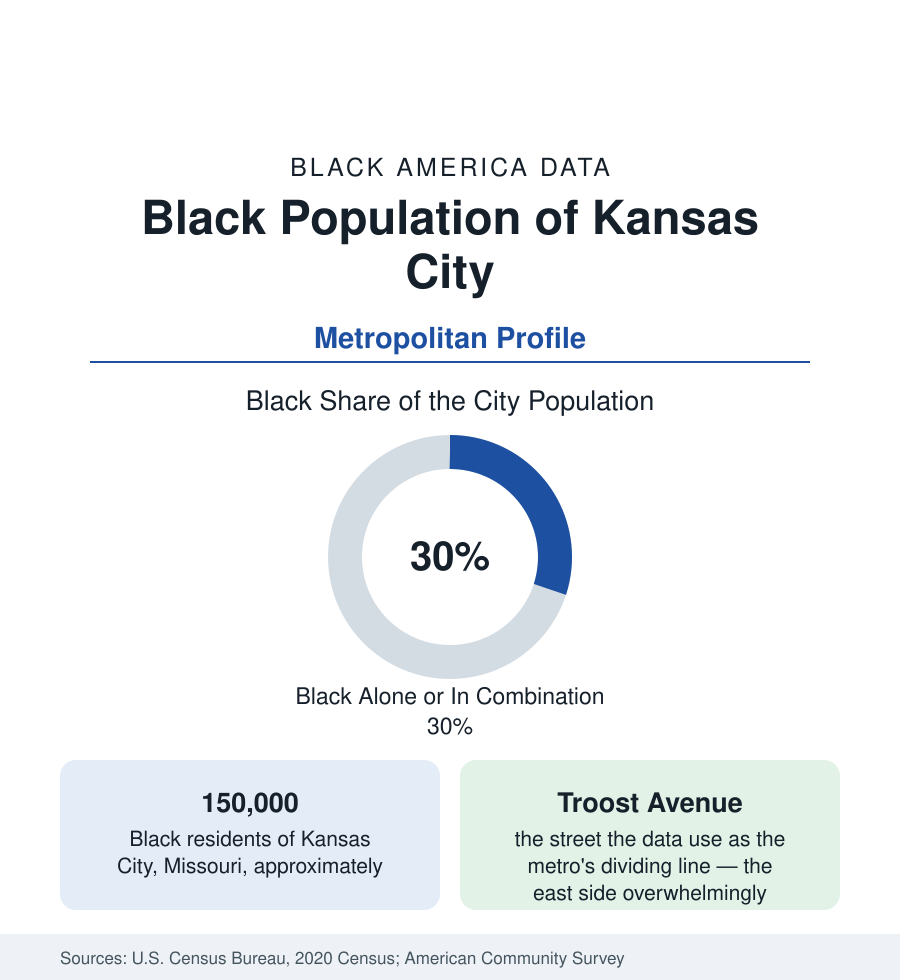

Black Cities
Black Kansas City: East of Troost
Kansas City holds about 150,000 Black residents in the Missouri city — and a metro population near 270,000 divided by the famous Troost line. The census profile.

Kansas City, Missouri, holds about 150,000 Black residents — Black alone or in combination, roughly three in ten of its 510,000 people — and the bi-state metropolitan area about 270,000. Kansas City's Black geography is organized by one of the most famous dividing lines in American urban data: Troost Avenue, the north-south street east of which the city is overwhelmingly Black and west of which it largely is not. Around that line grew a community that made the city a capital of Black music and baseball, and whose modern data span the full range of this section's outcomes within a few miles.
18th and Vine: The Historic Center
The community's historic heart is the 18th and Vine district, east of downtown: the center of Black Kansas City from the early twentieth century, when the city's Black population — drawn by the stockyards, railroads, and packinghouses — was confined by covenant and custom to the east side. Vine Street's clubs built the Kansas City jazz style (the territory bands, Count Basie's orchestra formed here, Charlie Parker's apprenticeship in its jam sessions), the Monarchs of the Negro leagues played at Municipal Stadium nearby, and the district's businesses, churches, and the Lincoln Building formed a complete civic world. The museums now housed at 18th and Vine — the American Jazz Museum and the Negro Leagues Baseball Museum — institutionalize that record. The surrounding neighborhoods, from the historic east side's Victorian housing to the mid-century districts beyond, remain the city's Black population center.
Troost: Reading the Line in the Data
Troost Avenue's divide is not folklore; it is measurable in every dataset this reference uses. The tracts east of Troost record the city's lowest incomes, its most difficult health outcomes, and its overwhelmingly Black population; the tracts west record the reverse, with the transition occurring within a few blocks on either side of the street. The line's origin in the early twentieth century's development and lending practices is documented in the housing literature, and its persistence is the metro's central demographic fact: Kansas City's overall Black share of 30 percent is, in truth, two cities' figures — an east side at 70 to 90 percent Black and a remainder in the low teens — averaged by a street. Recent tracts show the edges softening at downtown and midtown, where reinvestment districts straddle the line, while the deep east side's indicators remain the metro's hardest.
The Metro: Two States, Several Black Geographies
The metropolitan Black population distributes across both state lines. Kansas City, Kansas (Wyandotte County) holds a Black population of roughly a fifth to a quarter of its 165,000 people, with its own historic Black community and the Strawberry Hill and Quindaro districts' deep history — Quindaro was a free-port town of the Underground Railroad era. Independence, Raytown, and Grandview on the Missouri side suburbanized the Black population from the 1970s onward; Grandview and Raytown are now substantially Black suburbs. Lee's Summit, Liberty, and the Northland record growing communities at modest shares; Johnson County, Kansas — the metro's affluent engine — remains the region's least Black large county, the suburban side of the Troost pattern drawn at county scale.
Economy and Institutions
The employment base for Black Kansas City runs through health care (the hospital systems on both sides of the line), the federal presence (the region is a significant federal employment center), logistics along the intermodal corridors, and the public sector. Lincoln University's reach, the University of Missouri-Kansas City, and the Metropolitan Community College system carry the education data; the city has no HBCU but sits within Missouri's Lincoln University orbit. Black median household income in the metro runs mid-pack in this section's Midwestern set, with the east side's tracts and the suburbs' medians separated by the widest intra-metro spread of any city in the region — the Troost arithmetic again, expressed in dollars.
Reading the Kansas City Numbers
Kansas City is the profile that teaches the reader to distrust a citywide average: no figure quoted for the whole city describes either side of Troost. Its Black population — 150,000 in the city, 270,000 in the metro — holds one of Black America's great cultural legacies and one of its sharpest internal divides, and the honest unit of analysis here is the side of the street.
More in Black Cities
Black Atlanta: Population, Distribution, and Growth of a Black Metropolis
Metro Atlanta holds more than two million Black residents — roughly one in three, second only to New York. The suburban distribution, migration history, and composition of Black Atlanta in the census data.
Black New York: The Largest Black Population in America
The New York metropolitan area holds about 3.4 million Black residents — more than any metro in the nation — and the city itself about two million. The census profile.
Black Washington: The District and the Metro
The Washington metro holds about 1.6 million Black residents, and the District itself — long a majority-Black city — now records a Black share near 41 percent. The census profile.
Source: U.S. Census Bureau, 2020 Census; American Community Survey; Population Estimates Program.